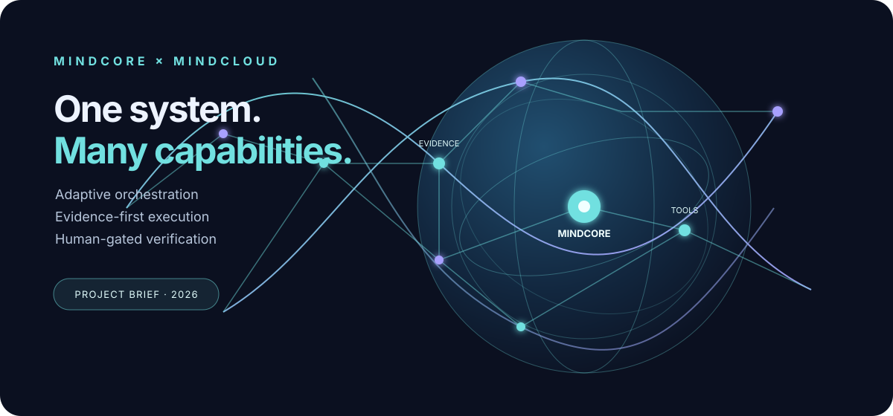

01 — ROUTE
Adaptive complexity
Match each task to the smallest suitable capability. Parallelize only when dependencies and risks allow it.

A supervised intelligence platform that routes work to specialized tools while keeping policy, evidence, audit, and verification under MindCore.
Clear boundaries; auditable execution.
Built to change without losing control.
Match each task to the smallest suitable capability. Parallelize only when dependencies and risks allow it.
Record inputs, outputs, provenance, checks, and failure states. A registered tool is not automatically a working tool.
Keep external credentials, browser sessions, processes, and provider calls behind explicit contracts and execution boundaries.
Challenge contradictions, revalidate affected subgraphs, preserve prior versions, and require approval for consequential promotion.
ArtCraft is a candidate visual-production tool.
Produce a concise narrative, source links, claims to verify, and a visual specification.
Potentially create scene compositions, explanatory images, or 3D/video assets through a supported workflow.
Record artifact references, provider/model details where available, parameters, and rights notes.
Check factual accuracy, clarity, rights, and consistency. Label generated illustrations so they cannot be mistaken for documentary evidence.
Integration status: research stage
ArtCraft has been identified as a candidate. Its README and developer setup have been reviewed, but no local build, supported automation interface, or live integration has yet been verified. The cover illustration is a repository-authored SVG, not an asset generated by ArtCraft.
Observable results, not optimistic status labels.